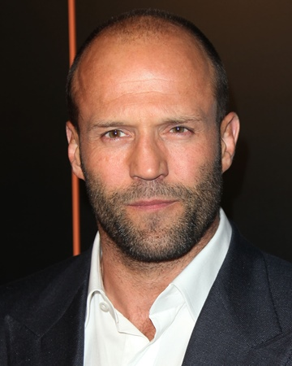

Близько семи років Джейсон зустрічався з англійською моделлю й акторкою Келлі Брук. Їхні стосунки тривали до 2004,[4][5] поки вона не познайомилася на зйомках фільму з актором Біллі Зейном. Пізніше Джейсон зустрів співачку Софі Монк,[6] але й із нею незабаром розійшовся. Згодом зустрічався з Алекс Зосман, та розлучився з нею 2010 роцi.
Форсаж 8

Перевізник

Карти, гроші та два стволи, що димлять